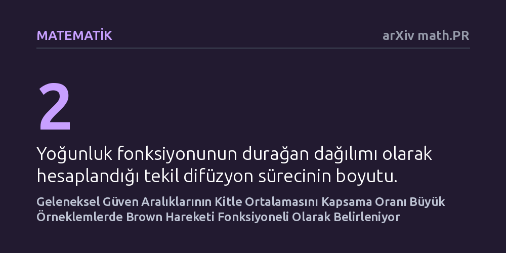

MATEMATIK · arXiv math.PR · 2026-10-21
Çalışma, geleneksel güven aralıklarının zaman boyunca gerçek ortalamayı kapsama oranının büyük örneklemlerde nasıl bir olasılık dağılımı sergilediğini inceledi. Yazarlar, bu oranın sınırda Brown hareketine bağlı bir rassal değişkene yakınsadığını ve kısmi diferansiyel denklemlerle hesaplanabildiğini ortaya koydu.
Geleneksel güven aralıklarının tek bir an yerine tüm süreç boyunca gerçek parametreyi ne kadar süre kapsadığını matematiksel olarak açıklayarak, sürekli veri takibinde yapılan istatistiksel çıkarımların güvenilirliğini netleştirir.

Klasik istatistik teorisinde bir güven aralığı, önceden belirlenmiş sabit büyüklükte tek bir örneklem üzerinden hesaplanır ve örneğin yüzde 95 güven düzeyinde popülasyon parametresini içermesi beklenir. Ancak günümüzün veri analitiğinde, canlı deneylerde ve A/B testlerinde veriler zaman içinde kesintisiz akmaya devam eder. Araştırmacılar ve karar vericiler, sonuçları yalnızca tek bir sabit anda değerlendirmek yerine veri geldikçe aralığı tekrar tekrar kontrol etme eğilimi gösterir.
Bu pratik ihtiyaç, son yıllarda herhangi bir anda bakıldığında dahi geçerliliğini koruyan 'her an geçerli güven aralıkları' kavramına yönelik yoğun bir akademik ilgi doğurmuştur. Söz konusu gelişme, araştırmacıların aklına temel bir soruyu getirmiştir: Eğer standart güven aralıklarını da benzer şekilde zaman içinde sürekli izlersek ne olur? Başka bir deyişle, geleneksel bir güven aralığı prosedürü uygulandığında, aralığın gerçek kitle ortalamasını örttüğü sürenin toplam zamana oranı nasıl bir davranış sergiler?
Araştırmacılar bu soruyu yanıtlamak için toplam örnekleme süresi n çok büyük olduğunda kapsama oranının olasılık dağılımını inceledi. Örneklem büyüklüğü sonsuza doğru giderken geçerli bir 'değişmezlik ilkesi' kurarak, oranın sınır dağılımını Z(1) adlı bir rassal değişkene bağladılar. Bu sınır değişkeni, standart Brown hareketinin bir fonksiyoneli olarak ifade edildi.
İncelenen Z(1) rassal değişkeni ölçek değişmezliği özelliği sergilemektedir. Yazarlar bu özellikten yararlanarak, Z(1) ile Brown hareketinin t=1 anındaki değeri olan B(1)'in ortak olasılık yoğunluk fonksiyonunu veren bir kısmi diferansiyel denklem (PDE) türetti. Ayrıca bu yoğunluğun, bir bileşeni ortalamaya dönme eğilimindeki Ornstein-Uhlenbeck süreci olan iki boyutlu tekil bir difüzyonun durağan dağılımı biçiminde de ifade edilebildiği kanıtlandı. Türetilen denklemi sayısal olarak çözebilmek adına yaklaşımsal bir Markov zinciri kurgulandı.
Elde edilen matematiksel çözümler, geleneksel güven aralıklarının zaman ortalamalı kapsama oranının tek bir sabit değere kilitlenmediğini, aksine belirgin bir olasılık yoğunluk fonksiyonu üzerinden dağıldığını gösterdi. Makale, elde edilen yoğunluk fonksiyonunun "zaman ortalamalı kapsama oranı problemine çeşitli içgörüler sağlayan bir dizi ilginç özelliğe" sahip olduğunu vurgulamaktadır.
Bu dağılım, geleneksel güven aralığının gerçek ortalamayı kapsadığı sürenin toplam izleme süresine oranının hangi değerler etrafında yoğunlaştığını ve ne sıklıkla hedef güven düzeyinden saptığını teorik olarak betimlemektedir. Böylece araştırmacılar, standart bir güven aralığı prosedürünün zaman boyunca ne kadar süre doğru parametreyi örttüğünü rassal süreçler perspektifinden kesin bir biçimde görebilmektedir.
Bu çalışma, geleneksel güven aralığı formüllerinin zamana yayılan dinamik süreçlerde doğrudan kullanılmasının yaratacağı sonuçları anlamak için teorik bir temel atmaktadır. Veri akışı sırasında erken durdurma veya sürekli kontrol yapan istatistikçilere, klasik yöntemlerin uzun vadeli zaman kapsaması profilini sunarak yeni nesil yöntemlerle klasik yaklaşımlar arasındaki farkı netleştirmektedir.
Öte yandan araştırmanın pratik uygulamaya aktarılmasında bazı sınırlar bulunmaktadır. Bulgular asimptotik limite, yani örneklemin sonsuza gittiği duruma dayanmaktadır; dolayısıyla sonlu örneklemlerde bu limite ne kadar çabuk ulaşıldığı ayrı bir inceleme gerektirir. Ayrıca çalışma henüz bağımsız hakem denetiminden geçmemiş bir önbaskı aşamasında olduğu için, sunulan matematiksel ispatların bilim camiası tarafından ayrıntılı olarak doğrulanması gerekmektedir.